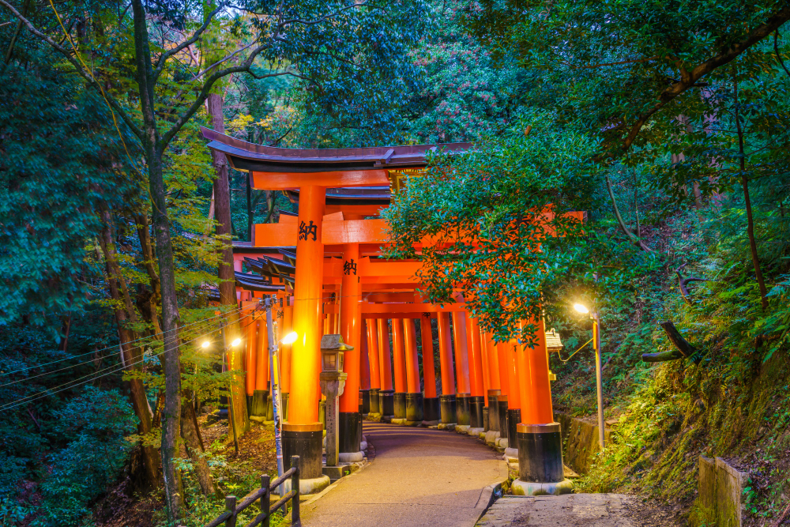
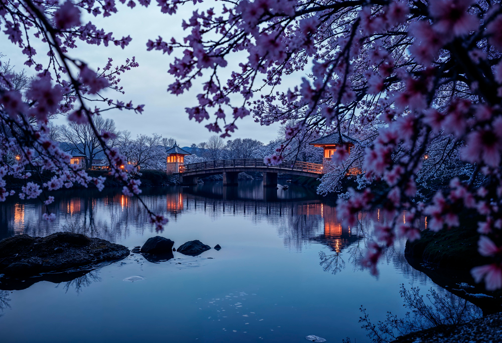

Sobre o lugar
Destinos Incríveis pelo Mundo Viajar é uma das formas mais enriquecedoras de expandir horizontes, conhecer novas culturas e viver experiências únicas. Cada destino oferece algo especial — seja pela sua história, belezas naturais ou atmosfera local. Ao escolher um lugar para visitar, não é apenas o ponto no mapa que importa, mas tudo o que ele desperta: curiosidade, encantamento e memórias que ficam para sempre.
Entre os destinos mais encantadores do mundo, está Kyoto, no Japão. Conhecida por seus templos antigos, jardins zen e casas de chá tradicionais, Kyoto é um convite à contemplação. Caminhar pelas ruelas do distrito de Gion, onde gueixas ainda circulam com seus quimonos elegantes, é como voltar no tempo. Durante a primavera, os campos de cerejeiras em flor pintam a cidade de rosa, criando uma paisagem de sonho que atrai visitantes do mundo todo.
Outro destino que impressiona é o LagoDeserto do Atacama, no Chile, considerado um dos lugares mais áridos do planeta. Suas paisagens surreais, com vales lunares, lagoas coloridas e salares, criam um cenário que parece de outro mundo. À noite, o céu cristalino transforma a região em um dos melhores pontos para observação astronômica do hemisfério sul, proporcionando uma experiência mágica sob as estrelas.
Como chegar
Mapa não funcionando: Clique aqui
Galeria

